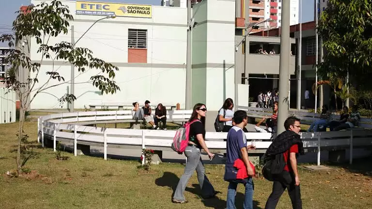

Etec Ilza Nascimento Pintus

Conheça o mundo dos etequianos!
Iniciou se como um movimento para estabelecer escolas técnicas no estado de São Paulo, no início do século 20. Em 1969, o Centro Estadual de Educação Tecnológica Paula Souza (CEETEPS) foi criado como uma autarquia estadual para promover o desenvolvimento da educação técnica. O Centro Paula Souza é a entidade que supervisiona as Etecs. Um marco significativo na história das Etecs ocorreu em 2008, quando várias escolas técnicas estaduais, escolas técnicas agrícolas e escolas técnicas industriais foram unificadas sob a bandeira das Etecs. Isso deu origem a uma rede de escolas técnicas que oferecem uma ampla variedade de cursos técnicos em diferentes áreas.